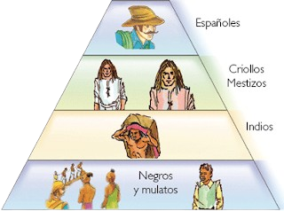
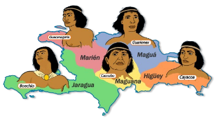
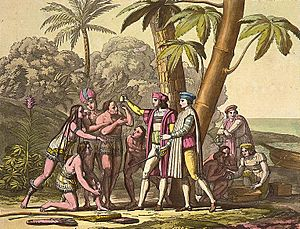
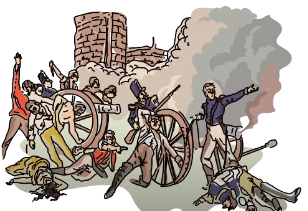
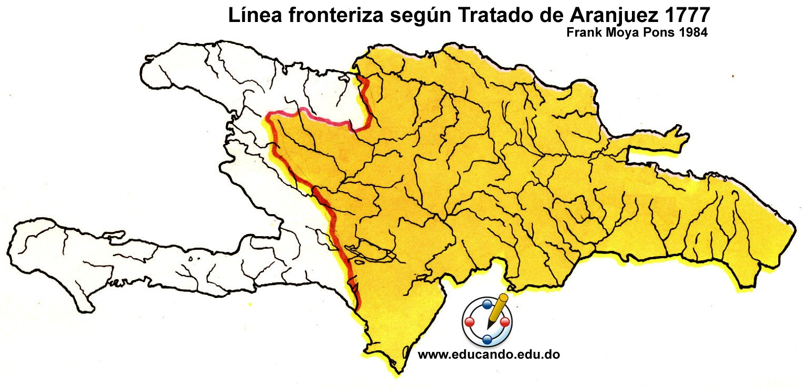
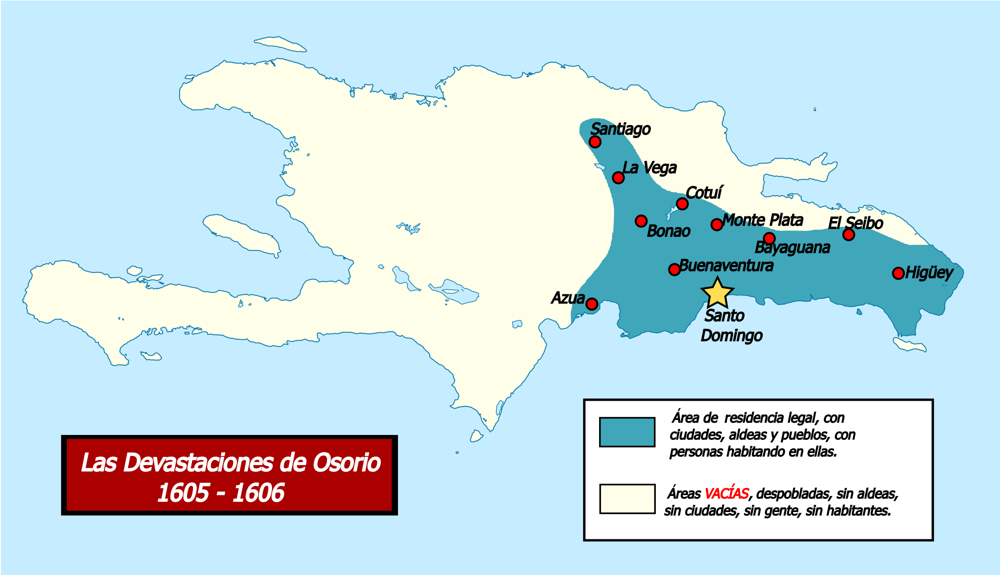

Aquí estarán los contenidos divididos por relevancia en cuanto a los periodos
Inicio del Contenido
Comienzo
Introducción
En este periodo se dará historia dominicana, la cual involucra la colonización de la isla y su desarrollo, historia de los procesos de resistencia, cultura de ese contexto histórico, relevancia histórica, historia de los taínos que habitaban la isla antes de la colonización y la esclavitud de la raza taína y africana.
Conceptos claves
(Exposiciones)
Se dieron exposiciones de distintos temas que abarcan el inició y proceso de la colonización de la isla de Santo Domingo
La colonización en America
Todo comenzó por la necesidad de la Corona Española de querer encontrar nuevas rutas marítimas para llegar a la India ya que la que conocían fue asediada y no era accesible. Por lo que Cristóbal Colón emprendió su viaje, encontrando tierra en el continente que ahora llamamos América el 12 de octubre de 1492. Utilizando los recursos de los países que había en el continente, explotando y aprovechándose de sus habitantes.
(Grupos de nativos que se encontraban en la isla antes)
Los primeros taínos, según investigaciones, se encontraron en la isla durante los años 2600 a.C. Ellos llegaron desde América del Sur. Los taínos tenían una cultura ya establecida, con sus costumbres y forma de vida. Eran pacíficos y se dedicaban a la agricultura, la pesca y la caza. Con estructuras sociales también bien establecidas, con los caciques liderando los grupos siendo capitanes, los nitainos quienes eran de la nobleza, los bohiques quienes eran los sacerdotes y curanderos, y los naborias quienes eran los trabajadores.
(Colonización de la Isla)
Cuando Cristóbal Colón llegó el 5 de diciembre del año 1492, específicamente al Cabo de San Nicolás, el primer contacto con los taínos fue amistoso debido a la curiosidad mutua. Sin embargo, después de un naufragio de una de las tres carabelas, construyeron un fuerte con los materiales sobrantes del barco, creando el Fuerte de Navidad, su primer asentamiento que posteriormente fue asediado. Decidieron entonces conquistar la isla fundando La Isabela. Gracias a sus recursos más sofisticados, lograron vencer a los taínos, sometiéndolos y obligándolos a trabajar en las minas de oro y construcción de estructuras.
(Estructura Social impuesta por los españoles, los esclavos africanos y decadencia)
La llegada de los españoles a la isla provocó una serie de significativos cambios en la estructura social de los nativos, ya que se crearon más clases sociales. Como los mestizos, quienes eran la combinación de sangres negras, taínas y españolas; el criollo, quienes eran los nacidos en la isla; los "indígenas", llamados así incorrectamente ya que pensaban que eran de Asia, son los nativos de la isla; y los esclavos africanos, quienes llegaron por la necesidad de los españoles de mano de obra debido a la despoblación taína que estaba ocurriendo. Los esclavos africanos, por así decirlo, eran el pilar de la colonización por todos sus trabajos. Pero debido a algunos sucesos como conflictos bélicos y la dependencia de las riquezas coloniales basadas en el oro, la economía se volvió vulnerable. Esto provocó un déficit financiero que terminó debilitando la corona, contribuyendo a su declive.
 Conceptos claves 2
Otras exposiciones
En las que se siguieron abordando distintos temas mas que desarrollaron la historia de la colonización de la isla de Santo Domingo
Trafico de esclavos en el continente Americano y la isla de Santo Domingo
Al necesitar mas mano de obra que no podia ser suplida por los taínos, comenzaron con el negocio de esclavos africanos a la isla, comenzando todo en 1501. Utilizando esclavos ladinos y luego bozales. Esto permitió un desarrollo mejor en la economía, y mas competencias de España también replicaron los mismo, como Francia quienes lo hicieron mas intenso en la parte oeste del país. EL principal exportador de africanos eran los portugueses.
Devastación de Osorio
Fue una orden de Felipe III de España a los gobernadores de la isla. Se baso en despoblar las regiones septentrionales y occidentales para llevarlas a la zona de Santo Domingo para tener un mayor control de los movimientos que hacían sus rivales como los franceses. Provocando una gran cantidad de muertes y desplazamientos de los taíno, ocurriendo durante los años 1605 y 1606.
Division de la Isla de Santo Domingo
Debido a conflictos del pasado se dividió en dos Haiti en el oeste y Republica Dominicana en el este. Haiti se divide en 10 subdivisiones llamadas departamentos (aquí las puede ver) y Republica Dominicana se divide en un Distrito Nacional, 10 regiones, 31 provincias y 156 municipios y 235 distritos (aquí las puede ver si quiere).
La España Boba😵
Fue un periodo en el que la corona Española durante finales de XVII estaba sufriendo de un notable debilitamiento politico, económico y militar. Por las guerras las cuales se le invertía mucho, debilitando la inversion economica de otras cosas para el desarrollo lo que hizo que se derrumbara prácticamente y este en su decadencia. Esto fue aprovechado por los franceses en la isla, ocupando, y esto fue logrado ya que el interés de la corona española no estaba en las colonias sino en levantarse de sus perdidas, por lo que el caribe recibió poco apoyo de España
Contenido que mas me ha llamado la atención
El tema que más me intereso fue el de la esclavitud ya que es del que tengo más conocimiento, viendo cómo se clasificaban según si eran culturizados o no, llamándose ladinos los que son culturizados y hablan español y los bozales quienes son los que vienen directamente de África. Y de todas las cosas que ocurrían, como que les ponían términos a cosas ocurrentes como a los esclavos que escapaban a quienes llamaban cimarrones o palenques, y cuando se hacia la acción de escapar lo llamaron alzamiento. Ver todos los detalles del pasado como sus resistencias y condiciones, es interesante. Y los esclavos al final se que influyeron de manera importante a nuestra cultura al relacionarse con la isla, y parte fundamental de la historia con la unificación que se intentó hacer y hasta la actualidad que divide la isla en dos partes que fueron definida por la historia.
Importancia de lo aprendido
Aunque la historia es pasado, esta es crucial para saber que soy, ya que soy dominicano, y saber todo lo que ha vivido mi país para ser lo que es hoy, es crucial para definir mi patriotismo. También me permite ver como la humanidad evoluciono moral y culturalmente con sus creencias. Ya que el pasado de la isla fue uno decidido por Europa en sus inicios y por su percepción del mundo hizo que los nativos de la isla no sean tratados dignamente, y la utilización de los esclavos que provoco ciertos cambios en el rumbo del país. Gracias a todo este conocimiento se porque las cosas son como son, y también me dan un margen mas critico de las demás cosas que rodea al mundo.
Expectativas
Mis expectativas de este periodo sí fueron cumplidas, ya que con este tema, uno tan importante como la independencia de nuestro país, ya que nos enseña el origen de todo. Pude dominarlo a su completitud y más realizando el diario reflexivo. Ya que los temas de la esclavitud, sistemas económicos, conflictos bélicos entre los países europeos, piratería, cultura, modernización, religión, devastaciones, estrategias fallidas y la decadencia de la corona española ahora están en mi mente guardadas en mi corazón. Estos conocimientos me hacen más consciente de lo que soy, y me hace más feliz de ser dominicano.
Conclusion
Finalización del diario reflexivo junto a mi reflexión
Tomando en cuenta todos los conocimientos de la colonización y detalles que nos dice en que repercutió en la sociedad actual, me da el criterio suficiente para decir lo siguiente.
La colonización fue un suceso histórico que cambio el mundo prácticamente, ya que sin ello almeno mi país no sería el mismo, y realmente me siento bien de tener la cultura que tengo, una hecha por sincretismo, también los españoles nos ahorraron muchos años de conocimiento y avance, pero de la peor manera posible. Al final ni como gente nos consideraban, y eso estaba mal pero el contexto histórico habla mucho así que tampoco era culpa de todos, ya que había quienes abogaban por los derechos de los taínos y esclavos. AL final, aunque se aprovecharon de los recursos también sufrieron muchos conflictos y las colonias le jugaron con una espada de doble filo, durante la época de la España Boba se ve esto, así que como conclusión no apoyo las ideas coloniales, pero estoy agradecido de las pocas cosas buenas que nos trajeron...
Bibliografía
-El Cuaderno de sociales
-La pagina de: dominicanaonline Para delimitar la divisiones de RD
-La pagina de: haitiwonderland.com/ Para delimitar la divisiones de Haiti
-La pagina de: concepto.de para aclarar conceptos claves